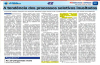

Imprensa
O Big Data e o RH do futuro
Data: 12/2015
Fonte: CEO EXAME
Ler a matéria
Vai mesmo demitir os melhores profissionais?
Data: 12/2015
Fonte: EXAME
Ler a matéria
Geração Y e Gestão Horizontal
Data: 04/2015
Fonte: The Winners Prime Leaders Magazine
Ler a matéria
Cadê meu Rivotril – A Inquietação dos Lideres
Data: 10/2014
Fonte: LIDERAR Congresso de liderança online
Assistir no YouTube
Vai na base da conversa?
Data: 12/2014
Fonte: Site Cliente S/A
Ler a matéria
A gestão do diálogo
Data: 12/2014
Fonte: Site Cliente S/A
Ler a matéria
A presidente da DOM Brasil Diagnósticos, participa da 1ª edição do Liderar Congresso
Data: 10/2014
Fonte: Blog Bruno Moura
Ler a matéria
Socorro, não tenho sucesso!
Data: 09/2014
Fonte: RH
Ler a matéria
Contratei da geração Z e agora?
Data: 09/2014
Fonte: Site Cliente S/A
Ler a matéria
A importância da autoavaliação para o desenvolvimento profissional
Data: 08/2014
Fonte: RH
Ler a matéria
DOM Brasil e Biosev firmam parceria: Recursos Humanos como estratégia de negócio
Data: 06/2014
Fonte: Blog do Bruno Moura
Ler a matéria
DOM Brasil: uma história empreendedora de dedicação e sucesso
Data: 03/2014
Fonte: Blog Bruno Moura
Ler a matéria
O que é essa tal de complementaridade?
Data: 02/2014
Fonte: Site Cliente S/A
Ler a matéria
Leitora Rosa: Neusa Miguel
Data: 12/2013
Fonte: Empreendedorismo Rosa
Ler a matéria
A pessoa certa no lugar errado
Data: 11/2013
Fonte: Site Cliente S/A
Ler a matéria
A inquietação dos líderes
Data: 09/2013
Fonte: Site Cliente S/A
Ler a matéria
O custo do turnover
Data: 08/2013
Fonte: Site Cliente S/A
Ler a matéria

A tendência dos processos seletivos inusitados
Data: 05/2013
Fonte: Jornal Concursos & Empregos
Ler a matéria
Como lidar com pessoas difíceis
Data: 06/2013
Fonte: Revista Administrador
Ler a matéria